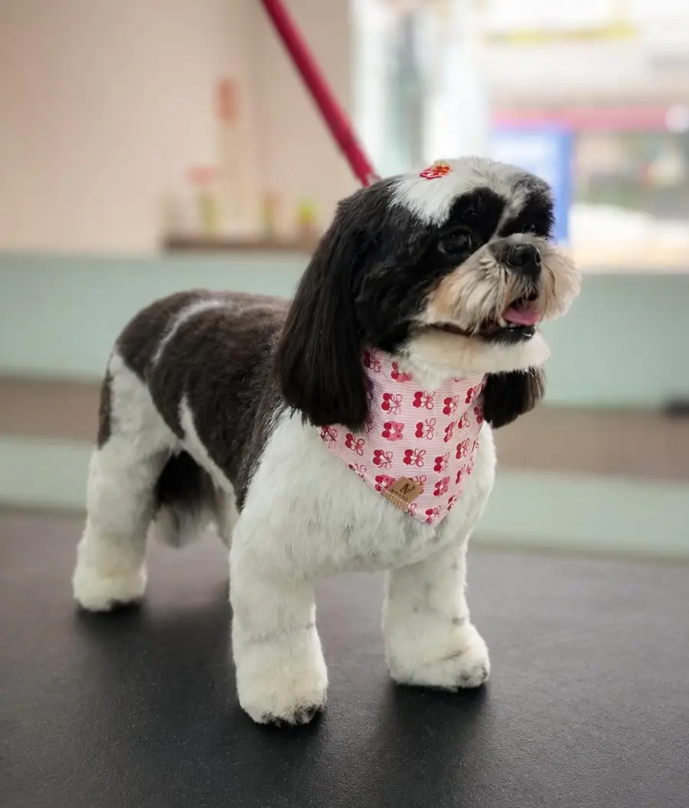
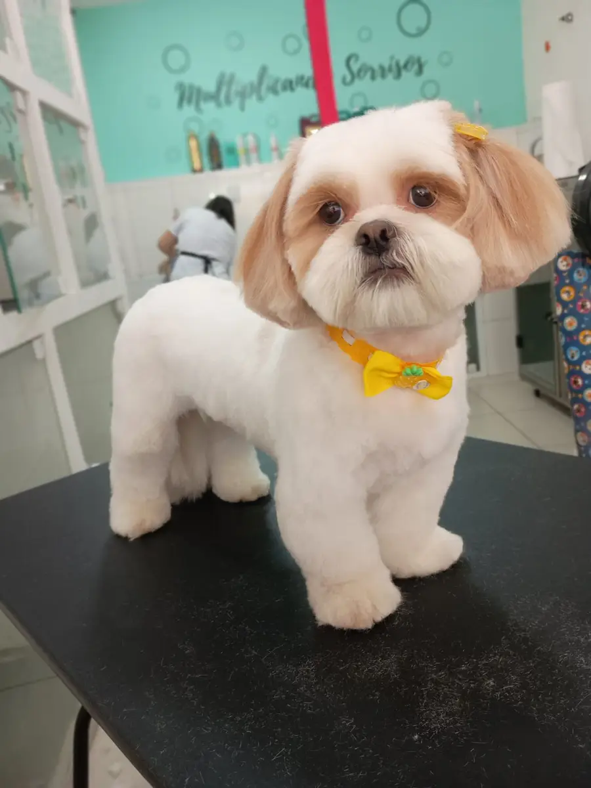
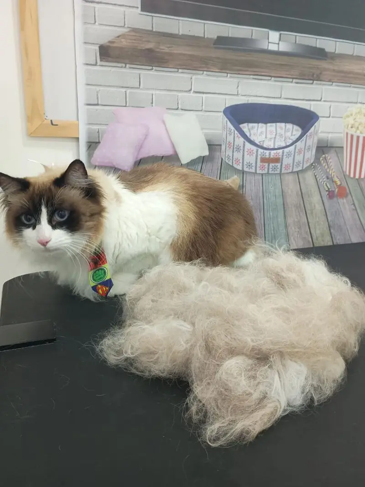
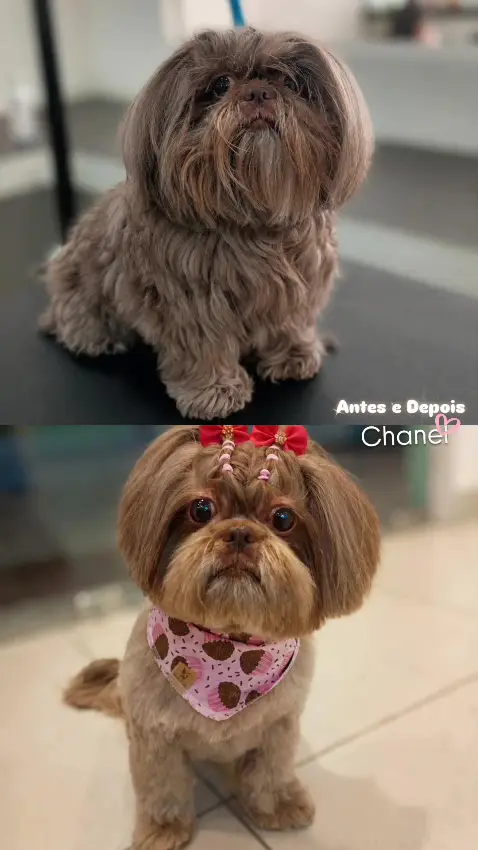

Banho
Banho completo com secagem, escovação e acabamento. Seu pet volta para casa limpinho e perfumado.
Na Anjo de Patas, na Vila Galvão, cada pet é cuidado com muito amor e respeito — do banho à primeira tosa.

Cuidados de estética para cães e gatos. Conte pelo WhatsApp a raça e o porte do seu pet que a equipe orienta o melhor serviço.
Banho completo com secagem, escovação e acabamento. Seu pet volta para casa limpinho e perfumado.
Aparo das áreas íntimas, patinhas e barriga, para mais conforto e higiene no dia a dia.
Pelagem uniforme e prática de manter, ideal para os dias quentes ou para quem prefere pelo curtinho.
Acabamento feito à mão, respeitando o formato do rosto e o estilo de cada raça. Com lacinho ou bandana no final.

A primeira vez na tosa marca o filhote. Por isso ela é feita sem pressa, com paciência e muito carinho, para que ele se acostume com o barulho, a mesa e as mãos de quem cuida.
“Levei meu shitzu de 7 meses para a primeira tosa e o atendimento foi impecável do início ao fim.”
Giovanna Comodini · tutora do Romeu
O que mais aparece nas avaliações da Anjo de Patas é uma palavra: carinho. Profissionais como a Alyne conquistam tutores que não trocam mais.
“Multiplicando sorrisos” — está escrito na parede do salão, e é bem isso.

“A partir do momento que conheci os serviços da Alyne, nunca mais largamos 🥹✨ Já estamos indo para 1 ano e meio em que só ela cuida da Lua: dá banho, tosa e cuida de cada detalhe com todo carinho e cuidado.”
Leticia Santos · ★★★★★
“Tive uma experiência incrível no Anjo de Patas Vila Galvão. Levei meu shitzu de 7 meses para a primeira tosa e o atendimento foi impecável do início ao fim.”
Giovanna Comodini · ★★★★★Resposta da Equipe Anjo de Patas“Ficamos muito felizes em saber que a primeira tosa do Romeu foi uma experiência tão positiva. Aqui cada pet é cuidado com muito amor e respeito. Voltem sempre, a casa é de vocês.”
“Pessoal super atencioso, o serviço prestado por eles foi super rápido, minha cachorrinha ficou extremamente limpa e linda.”
Calixto · Local Guide · ★★★★★
“Equipe nota 10, muito atenciosos e profissionais.” · “Desde a recepção até o resultado final foram ótimos.”
Alguns dos clientes que passaram pela mesa de tosa.

Depende do porte, da pelagem e do serviço escolhido — um banho simples costuma ser mais rápido que banho com tosa. Ao agendar pelo WhatsApp, a equipe informa a previsão para o seu pet.
Manter a vacinação e o controle de pulgas em dia protege o seu pet e os outros que frequentam o salão. Confirme com a equipe, no agendamento, o que é pedido.
O ideal é esperar o filhote completar as vacinas, conforme orientação do veterinário. A primeira tosa é feita com calma para ele se acostumar — tutores já trouxeram filhotes de 7 meses e voltaram encantados.
Sim! Gatos também passam por aqui para banho e escovação. Fale com a equipe para combinar o melhor horário.
Pelo WhatsApp (11) 93735-9124. Envie o nome do pet, a raça e o serviço desejado.
R. Quitandinha, 193 — Vila Galvão
Guarulhos - SP, 07056-080
| Segunda a sexta | 9h às 17h |
| Sábado | 9h às 17h |
| Domingo | Fechado |